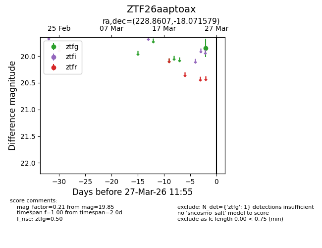
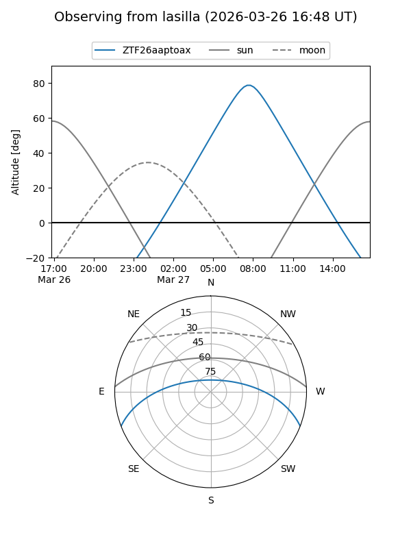
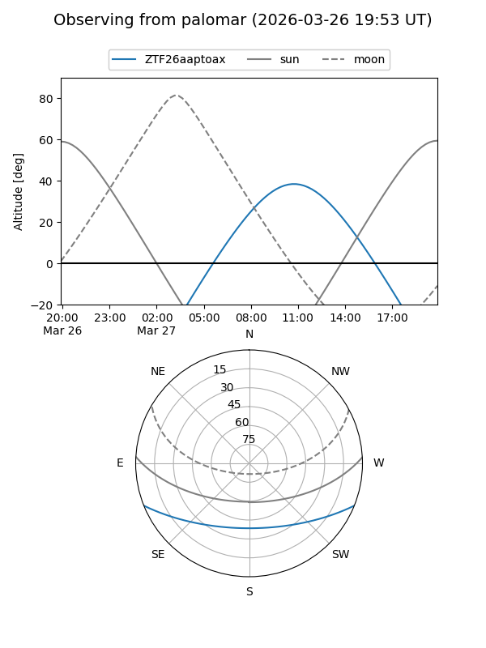

ZTF26aaptoax
Target ZTF26aaptoax at 2026-03-27 11:58
Aliases and brokers:
FINK: link
Lasair: link
ALeRCE: link
alt names
ZTF26aaptoax (ztf,fink_ztf)
Coordinates:
equatorial (ra, dec) = 228.8607,-18.07158
equatorial (HMS+DMS) = 15:15:26.57,-18:04:17.68
galactic (l, b) = (344.6508,+32.89069)
Flags:
Photometry:
last ztfg=19.85
1 ztfg detections
Lightcurve

Visibility


Additional plots